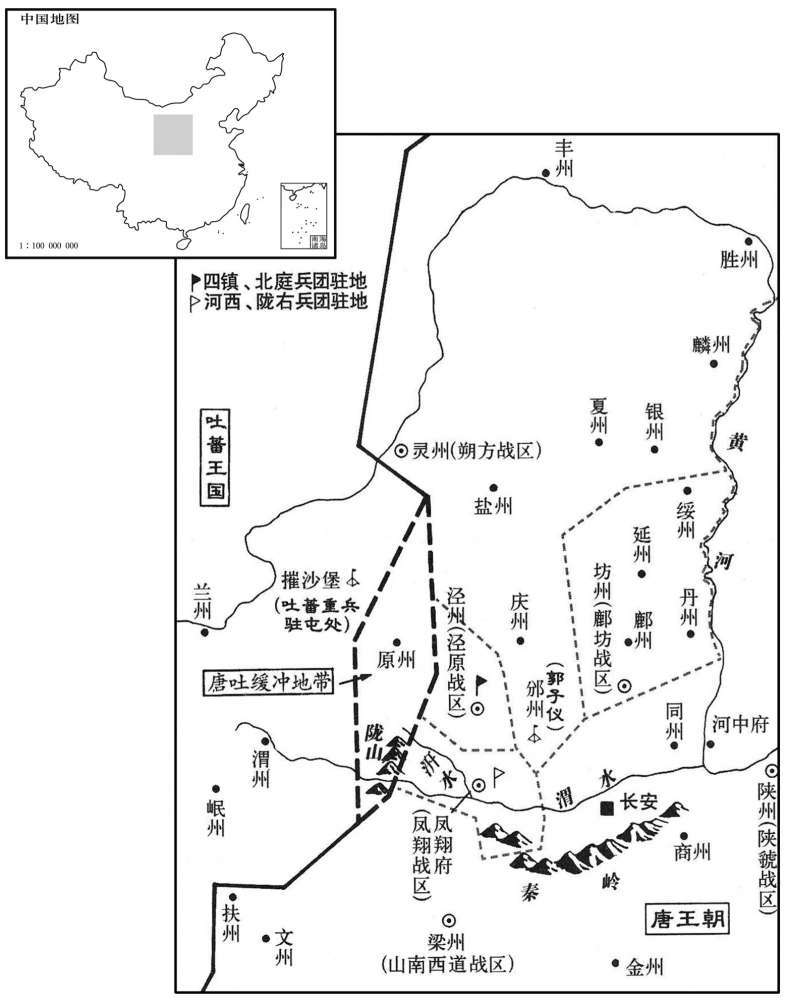
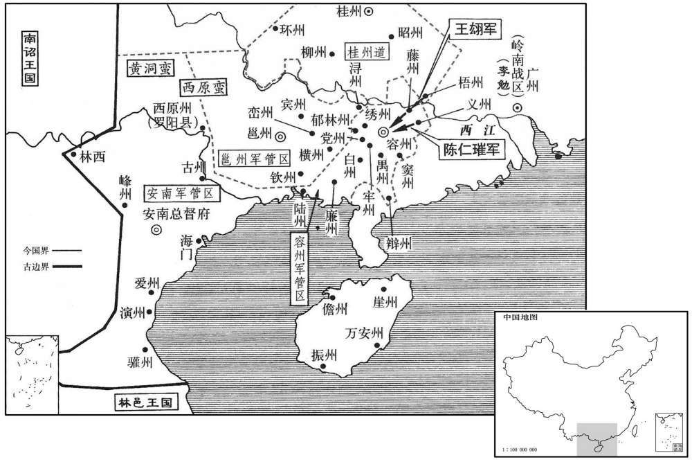

公元771年资治通鉴：本年记事、原文与白话对照
按原书编年位置阅读；追叙和史论不等于本年发生的事件。白话采用所据译本，缺译不以生成译文补齐。
卷224 · 本年记事
公元771年 · 唐代宗睿文孝武皇帝大历六年
六年〔（辛亥、七七一）〕
本年事件索引（现代整理）

本年形势与背景参考图
春，二月，壬寅，河西、陇右、山南西道副元帅兼泽潞、山南西道节度使李抱玉上言：〔帅，所类翻。使，疏吏翻。上，时两翻。〕「凡所掌之兵，当自训练。今自河、陇达于扶、文，绵亘二千余里，抚御至难。若吐蕃道岷、陇〔【章：十二行本「蕃」下有「两」字，「道」下无「岷陇」二字；乙十一行本同。】〕俱下〔吐，从暾入声。言蕃兵入寇，分道向岷、陇二州而下。〕臣保固汧、陇则不救梁、岷，进兵扶、文则寇逼关辅，首尾不赡，进退无从。愿更择能臣，委以山南，使臣得专备陇坻。」诏许之。〔汧，口坚翻。坻，音底。〕
春季，二月壬寅（十五日），河西、陇右、山南西道副元帅兼泽潞、山南西道节度使李抱玉进言说：“凡是所掌握的军队都应当自己训练。如今从河州、陇州到扶州、文州，绵延二千多里，安扶和防御十分困难。假若吐蕃取道向岷州、陇州同时进犯，我保守州、陇州，那么就不能救援梁州、岷州；进兵扶州、文州，那么敌人就会进逼关辅，首尾不能相顾，进退无所适从，愿陛下再选能干的大臣，将山南西道委托给他，使我能够专门守备陇坻。”代宗下诏同意了他的请求。
郭子仪还邠州。〔还，从宣翻，又音如字。〕
郭子仪返回州。
岭南蛮酋梁崇牵自称平南十道大都统，据容州，〔酋，慈由翻。统，他综翻，俗音从上声。容州治普宁县，汉合浦县地，今州西有容山而名。〕与西原蛮张侯、夏永等连兵攻陷城邑，前容管经略使元结等皆寄治苍梧。〔容管领辩、白、牢、钦、禺、汤、瀼、岩、古等州，在桂管西南。武德四年，分静州之苍梧、豪静置梧州。酋，慈由翻。〕经略使王翃至藤州，〔翃，户宏翻。〕以私财募兵，不数月，斩贼帅欧阳珪，驰诣广州，见节度使李勉，请兵以复容州；〔岭南节度使治广州，兼统五管，故诣之请兵。帅，所类翻。〕勉以为难，翃曰：「大夫如未暇出兵，但乞移牒诸州，扬言出千兵为援，冀藉声势，亦可成功。」勉从之。翃乃与义州刺史陈仁璀、〔宋白曰：义州，即汉苍梧郡猛陵县地，隋为永熙郡永业县。唐武德四年，于此置南义州，天宝改为连城郡，干元后为义州。璀，七罪翻。〕藤州刺史李晓庭等结盟讨贼。〔藤州，治镡县，汉之猛陵县也。〕翃募得三千余人，破贼数万众；攻容州，拔之，擒梁崇牵，前后大小百余战，尽复容州故地。分命诸将袭西原蛮，〔新书：西原蛮，居广、容之南，邕、桂之西，北接道州、武冈，依阻峒穴，绵地数千里。将，即亮翻。〕复郁林等诸州。
岭南蛮族酋长梁崇牵自称平南十道大都统，占据容州，与西原蛮人张侯、夏永等连兵攻陷城邑，前容管经略使元结等人都将治所移置苍梧。经略使王来到藤州，用自己的财产去招募兵员，不出数月，杀掉贼军将领欧阳，然后，驰马前往广州，参见岭南节度使李勉，请求出兵收复容州。李勉认为困难，王说：“您如果顾不上出兵，我只恳求给所辖各州移交公文，扬言要派一千士兵作为后援，依靠这样的声势，我也可以获得成功。”李勉听从了他的建议。于是王与义州刺史阿仁璀、藤州刺史李晓庭等人结下盟誓讨伐贼军。王招募了三千多人，打败了数万名贼军。其后，攻克容州，生擒梁崇牵。王前后共打大小战斗一百多次，收复全部容州故地。王又分别命令各将领袭击西原蛮，收复了郁林等州。

先是，番禺贼帅冯崇道，〔先，昔荐翻。番禺，汉县，唐带广州。番山在州东三百步，禺山在北一里，因以名县。番，音潘。〕桂州叛将朱济时，皆据险为乱，陷十余州，官军讨之，连年不克；李勉遣其将李观与翃并力攻讨，悉斩之，〔观，古玩翻。〕三月，五岭皆平。
此前，番禺贼军将领冯崇道、桂州叛军将领朱济时都凭依险要地形作乱，攻陷十多个州，官军讨伐他们，一连数年都没有成功。李勉派遣部将李观与王合力进攻征讨，将他们全部杀死。三月，五岭的叛乱全部被平息。
河北旱，米斗千钱。
河北发生旱灾，一斗米价值一千钱。
夏，四月，己未，澧州刺史杨子琳入朝，上优接之，赐名猷。〔澧，音礼。朝，直遥翻。〕
夏季，四月己未（初三），澧州刺史杨子琳入朝，代宗宽容地接待了他，并赐名“猷”。
庚申，以典内董秀为内常侍。〔唐百官志：太子内坊局令，从五品下。初，内坊隶东宫，开元二十七年，隶内侍省为局，改典内曰令，置丞，掌坊事及导客。内常侍，正五品下。〕
庚申（初四），代宗任命典内董秀为内常侍。
吐蕃请和；庚辰，遣兼御史大夫吴损使于吐蕃。〔吐，从暾入声。使，疏吏翻。〕
吐蕃请求和好，庚辰（二十四日），代宗派遣兼御史大夫吴损出使吐蕃。
成都司录李少良上书言元载奸赃阴事，〔少，始照翻。上，时掌翻。载，祖亥翻，又如字。〕上置少良于客省。少良以上语告友人韦颂，殿中侍御史陆珽以告载，载奏之。上怒，下少良、颂、珽御史台狱。御史奏少良、颂、珽凶险比周，离间君臣，〔下，遐驾翻。少，时照翻。珽，他顶翻。比，毗至翻。间，古苋翻。〕五月，戊申，敕付京兆，皆杖死。
成都司录李少良上书代宗揭露元载奸伪贪赃的秘事，代宗将李少良安置在客省。后来，李少良将他跟代宗说的话告诉了友人韦颂，殿中侍御史陆将此事告诉了元载，元载上奏代宗。代宗恼怒，将李少良、韦颁、陆逮入御史台监狱。御史上奏称李少良、韦颂、陆凶恶阴险，结党营私，离间君臣，五月戊申（二十三日），代宗敕令将他们交付京兆府，都用乱棍打死。
秋，七月，丙午，元载奏，凡别敕除文、武六品下官，乞令吏部、兵部无得检勘，从之。时载所奏拟多不遵法度，恐为有司所驳故也。〔载，祖亥翻，又音如字。驳，比角翻。〕
秋季，七月丙午（二十二日），元载上奏说，凡是另外颁敕封授文、武六品以下的官员，请命令吏部和兵部不得检查核正，代宗表示同意。这是因为当时元载上奏拟定的事情多不遵循法规，害怕遭到有关部门反驳的缘故。
八月，丁卯，淮西节度使李忠臣将兵二千屯奉天防秋。〔使，疏吏翻。将，即亮翻。秋高马肥，吐蕃数入寇，唐岁调关东之兵屯京西以防之，谓之防秋。〕
八月丁卯（十四日），淮西节度使李忠臣率领二千士兵驻扎奉天防御吐蕃。
上益厌元载所为，思得士大夫之不阿附者为腹心，渐收载权。丙子，内出制书，以浙西观察使李栖筠为御史大夫，宰相不知，载由是稍绌。〔相，昔亮翻。绌，敕律翻。〕
代宗愈发厌恶元载的所作所为，想找刚正不阿的士大夫作为自己的心腹，逐渐收回元载的权力。丙子（二十三日），代宗从内宫中发布制书，任命浙西观察使李栖筠为御史大夫，并且没有告诉宰相，从此元载的权势稍稍受到压制。
九月，吐蕃下青石岭，军于那城；〔青石岭，在原州西。那城，即汉朝那，故城在原州花石川。吐，从暾入声。〕郭子仪使谕之，明日，引退。
九月，吐蕃越过青石岭，驻扎在那城；郭子仪派人告劝他们，第二天，吐蕃撤军。
是岁，以尚书右丞韩滉为户部侍郎、判度支。自兵兴以来，所在赋庶度，〔尚，辰羊翻。度，徒洛翻。敛，力赡翻。〕仓库出入无法，国用虚。滉为人廉勤，精于簿领，作赋敛出入之法，〔滉，呼广翻。〕御下严急，吏不敢欺；亦值连岁丰穰，边境无寇，自是仓库蓄积始充。滉，休之子也。〔韩休，开元中为相，有直声，而滉以强干闻。〕
这一年，代宗任命尚书右丞韩为户部侍郎、判度支。自从战事兴起以来，各地征收赋税没有法度，仓库出入物资没有章法，国家财政空虚。韩为人清廉勤勉，精通文簿登记事务，他制定了赋税收支的法规，驾驭部下严厉，官吏不敢欺骗。同时正值连年丰收，边境无患，从此仓库积蓄才开始充实。韩是韩休的儿子。